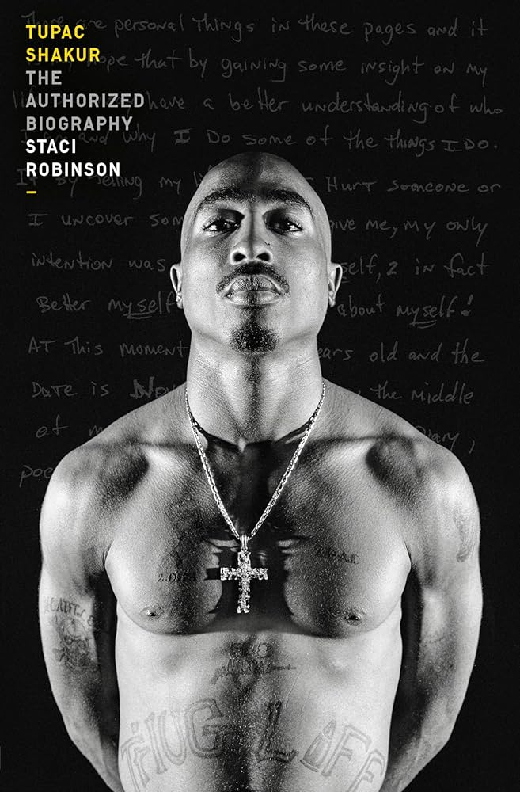
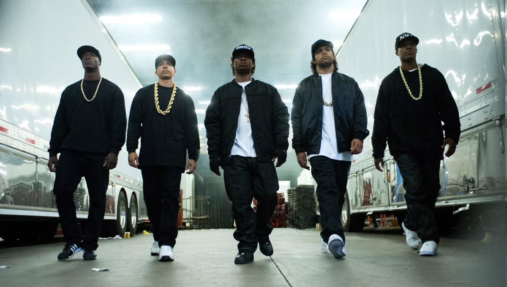
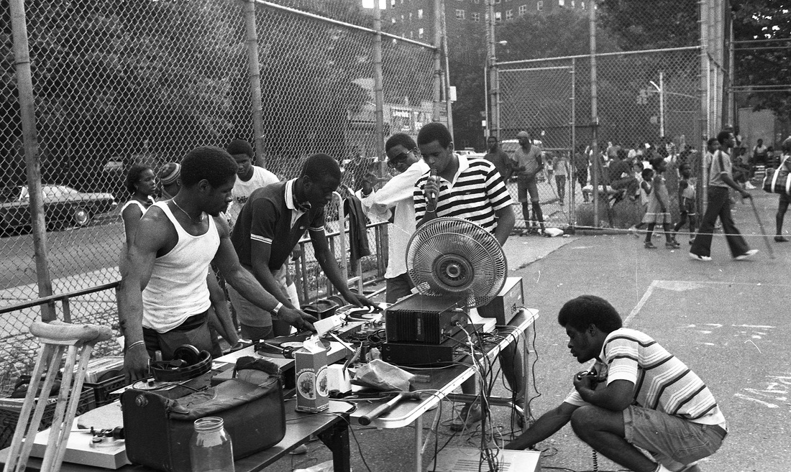
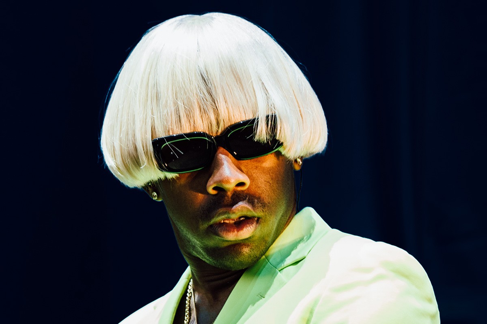

A Little Background
What is Hip-Hop/Rap
Hip-Hop, cultural movement that attained widespread popularity in the 1980s and '90s and also the backing music for rap, the musical style incorporating rhythmic and/or rhyming speech that became the movement's most lasting and influential art form. The original four main pillars of hip hop include DJing/turntablism, MCing/rapping, B-boying/breaking, and visual/graffiti art. These forms of expression have also developed into further subcultures with lasting legacies. Todays concept of the genres are as diverse as ever and covers a range of topics, styles, and approaches to politics. Also accompanying the success of the genre, artists have become stars and icons in popular culture;
Old School Rap
Old-school hip hop is noted for its relatively simple rapping techniques, compared to later hip hop music. Artists such as Melle Mel would use few syllables per bar of music, with simple rhythms and a moderate tempo. Much of the subject matter of old-school hip-hop centers around partying and having a good time. Old-school hip hop is noted for its relatively simple rapping techniques, compared to later hip hop music. Artists such as Melle Mel would use few syllables per bar of music, with simple rhythms and a moderate tempo. Much of the subject matter of old-school hip-hop centers around partying and having a good time.
The emergence of Hip-Hop
Hip hop is more than music; its a cultural movement that incorporates different elements of art. Four foundational elements characterize hip hop culture. The original four main pillars of hip hop include DJing/turntablism, MCing/rapping, B-boying/breaking, and visual/graffiti art. These forms of expression have also developed into further subcultures with lasting legacies. Old-school hip hop is noted for its relatively simple rapping techniques, compared to later hip hop music. Artists such as Melle Mel would use few syllables per bar of music, with simple rhythms and a moderate tempo. Much of the subject matter of old-school hip-hop centers around partying and having a good time.
“Rap is something you do, hip hop is something you live.” KRS OneModern Day Rap/Hip-Hop
Here is where we arrive at the present day and age of rap and hip-hop gangster rap having played an invaluable part in the style of what is considered rap and hip-hop today. Todays concept of the genres are as diverse as ever and covers a range of topics, styles, and approaches to politics. Also accompanying the success of the genre, artists have become stars and icons in popular culture; not only this, but the industry and genre themselves have been influenced by commercialization, consumerism, and modern politics. Hip hop is more than music; its a cultural movement that incorporates different elements of art. Four foundational elements characterize hip hop culture. The original four main pillars of hip hop include DJing/turntablism, MCing/rapping, B-boying/breaking, and visual/graffiti art. These forms of expression have also developed into further